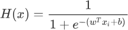
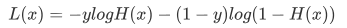
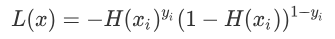
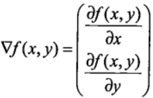

数学解析Logistic回归算法
在《Logistic回归算法（分类问题）》一节，我们学习了 Logistic 回归算法，并且重点认识了 Logistic 函数。我们知道分类问题的预测结果是离散型数据，那么我们在程序中要如何表述这些数据呢，再者我们要如何从数学角度理解 Logistic 算法，比如它的损失函数、优化方法等。
上述公式和 Logistic 函数基本一致，只不过我们它换成了关于
想要理解损失函数，我们需要继续分析假设函数。我们知道假设函数的值域是从 (0,1) 之间的数值，而这个数据区间恰好与概率值区间不谋而合。如果我们把预测结果看做概率，则可以得到另外一种写法的损失函数：
综上所述：当 y=1 时，如果预测正确，预测值则无限接近 1，也即 H(xi)yi 的值为 1，损失值则为 -1；如果预测错误，H(xi)yi 的值为 0，损失值也为 0。预测错误的损失值确实比预测正确的损失值大（0 > -1），满足要求。
虽然上述函数能够表达预测值和实际值之间的偏差，但它有一个缺点就是不能使用梯度下降等优化方法。因此，在机器学习中要通过取对数的方法来解决此问题，这样就得到了最开始的损失函数。如下所示：
上述公式是其实并不难理解，该函数分别对 x 与 y 求的偏导数，其中关于 x 的偏导数表示沿着 x 的方向移动，而关于 y 的偏导数一个表示沿 y 的方向移。其中，函数f(x,y) 必须要在待计算的点上可导。在梯度上升的过程中，梯度总是指向函数值增长最快的方向，我们可以把每移动一次的“步长”记为
分类数据表示形式
1) 向量形式
在机器学习中，向量形式是应用最多的形式，使用向量中的元素按顺序代表“类别”。现在有以下三个类别分别是 a/b/c，此时就可以使用 [1,2,3] 来分别代表上述三类，预测结果为哪一类，向量中的元素就对应哪个元素，比如当预测结果为 c 类的时候，则输出以下数据：[0,0,3]
2) 数字形式
数字形式是一种最简单的分类方式，我们可以用 0 代表“负类”（即 x < 0时的取值），而用“1”代表正类（即 x>0 时的取值），那么当预测结果输出“1”就代表正类，而预测结果输出“0”代表“负类”。当然这里选择的数字只是形式，你可以选择任意其他数字，不过按照约定俗成，我们一般采用 “1”代表正类，而 “-1”或者“0”代表“负类”。 如果用代码的表示数字形式的中心思想，如下所示：
#以 0 为节将其分开
if (logistic函数输出的是连续值>0):
return 1
else:
return 0
3) 概率形式
在有些实际场景中，我们无法准确的判断某个“样本”属于哪个类别，此时我们就可以使用“概率”的形式来判断“样本”属于哪个类别的几率大，比如对某个“样本”有如下预测结果：[0.8,0.1,0.1]从上述输出结果不难看出，该样本属于 a 类的概率最大，因此我们可以认定该样本从属于 a 类。
Logistic函数数学解析
1) 假设函数
经过上一节的学习得知 Logistic 函数能够很好的拟合“离散数据”，因此可以把它看做“假设函数”，但是还需要稍稍的改变一下形式，如下所示：

上述公式和 Logistic 函数基本一致，只不过我们它换成了关于
x的表达式，并将幂指数x换成了 “线性函数”表达式。H(x) 的函数图像呈现 S 形分布，从而能够预测出离散的输出结果。2) 损失函数
LogIstic 回归算法的损失函数有点复杂，也许你会感动莫名其妙，损失函数的表达式如下：

想要理解损失函数，我们需要继续分析假设函数。我们知道假设函数的值域是从 (0,1) 之间的数值，而这个数据区间恰好与概率值区间不谋而合。如果我们把预测结果看做概率，则可以得到另外一种写法的损失函数：

上述函数是根据概率设计出来的，它由 H(xi)yi 和 (1-H(xi))1-yi 两部分组成，由于 y 值的取值只会是 0 或者 1，所以每次只有一个部分输出值，因此可以达到分类的目的。
我们知道 y 输出值概率值只能为 0 或者 1，因此上述函数只会有一部分输出数值。即当 y=1 时候，1-y 就等于 0，因此上述表达式的第二部分，也就是 (1-H(xi))1-yi 的值为 1，相乘后并不会对函数值产生影响。当 y = 0 时，同理。综上所述：当 y=1 时，如果预测正确，预测值则无限接近 1，也即 H(xi)yi 的值为 1，损失值则为 -1；如果预测错误，H(xi)yi 的值为 0，损失值也为 0。预测错误的损失值确实比预测正确的损失值大（0 > -1），满足要求。
虽然上述函数能够表达预测值和实际值之间的偏差，但它有一个缺点就是不能使用梯度下降等优化方法。因此，在机器学习中要通过取对数的方法来解决此问题，这样就得到了最开始的损失函数。如下所示：
3) 优化方法
如果将 Logistic 函数的输出记做 z 可得如下公式：z = w0x0+w1x1<+....+wnxn
采用向量的形式可以写为：z=wTx
它表示将这两个数值向量对应元素相乘然后全部加起来即得到 z 值。其中的 x 是分类器的输入数据，向量 w （最佳参数）会使得分类器尽可能的精确。为了寻找该最佳参数就需要用到优化方法，下面我们简单介绍梯度上升优化方法。梯度上升优化方法
梯度上升与梯度下降同属于优化方法，它们两者有着异曲同工之妙，梯度下降求的是“最小值”，而梯度上升求的是“最大值”。梯度上升基于的思想是：要找到某函数的最大值，最好的发放是沿着该函数的梯度方向寻找，如果把梯度记为▽，那么关于 f(x,y) 有以下表达式：

上述公式是其实并不难理解，该函数分别对 x 与 y 求的偏导数，其中关于 x 的偏导数表示沿着 x 的方向移动，而关于 y 的偏导数一个表示沿 y 的方向移。其中，函数f(x,y) 必须要在待计算的点上可导。在梯度上升的过程中，梯度总是指向函数值增长最快的方向，我们可以把每移动一次的“步长”记为
α 。用向量来表示的话，其公式如下：w1= w + α▽wf(w)
在梯度上升的过程中，上述公式将一直被迭代执行，直至达到某个停止条件为止，比如达到某个指定的值或者某个被允许的误差范围之内。关注公众号「站长严长生」，在手机上阅读所有教程，随时随地都能学习。内含一款搜索神器，免费下载全网书籍和视频。

微信扫码关注公众号